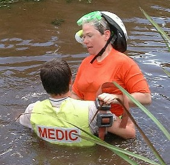
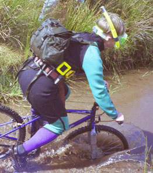
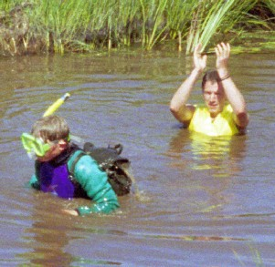

Myra's Bike PagesI was the 2000 Women's World Champion Mountain Bike Bog Snorkeler. The what? you ask. Well, it goes like this...
About 15 years ago, Gordon Green decided to attract some more attention to Llanwrtyd Wells, Wales' smallest town, by creating the World Bog Snorkelling Championships. In this event, competitors with mask, snorkel, and scuba fins swim along a 60 meter trench cut through a peat bog. This proved to be such a success that three years ago he came up with a similar event for mountain bikers.
In the wheeled version, you start at one end of a pond filled with very brown muddy water, cycle a specially modified bike around a pole, then come back to the start. The bike is weighted so it stays down: the frame has been filled with lead shot, the tires filled with water, and lead weights are attached to a frame bag. You wear scuba weight belts so you stay down, and you wear a mask and snorkel. The idea is that your eyes are just about level with or slightly below the water, but you can breathe through the snorkel.
For the first two years, MTB journalist Dave Atkinson (currently art editor for What Mountain Bike) has won the event, and he was back for the 2000 competition, which took place on the 15th of July. I was there too.
 Bog rescue I arrived as they were putting the finishing touches on the course. I entered the competition and watched the practice runs. At first I thought I wouldn't do any practice runs, after all I was the only woman, so as long as I completed the course I was the winner of the ladies competition. But I noticed the guys who practiced were improving so I decided to try. I donned weights, mask & snorkel (attaching my glasses to a fence), adjusted the seat on the bike, and went in.
It was cold, but adrenaline kept me from getting too chilled. I pedalled but found that the wheels slipped easily on the floor of the bog. I kept at it and slowly crept forward. I couldn't see anything, just this brown liquid outside the mask. Then as I got slightly deeper I couldn't breathe. No problems, I'll come up. Ulp, what about those weights? They were doing their job of keeping me down. I started to panic. Luckily there were a couple of ambulance guys on hand, one in a wetsuit. He jumped in. I normally don't jump straight into the arms of handsome young strangers, but this was an exception. He pushed me out and hauled the bike out.
Gordon Green, the proprietor of the Neuadd Arms and the inventor of this loony competition told me I had the snorkel on wrong: I had it pointing backwards as you do for scuba, but it needs to be pointing straight up. He realigned it and I tried again. Down the ramp and into the bog. I made it to the pole and was about to start around it when I couldn't breathe again. Despite being pointed up, the snorkel was still under water. The guy in the wetsuit was nearby, and between the two of us we got to shore again.
Well, that was enough for me. I watched the competition, cheering on the snorkellers. There were some very good runs, and Dave was probably getting a bit nervous, wondering if he could retain his title. However, when he went in he was all business, and not only came up with the winning time, but setting a new world record time of 1min 5sec as well!
  Going in... Coming out... That would have been the end of it for me, but Gordon really wanted a female champion this year. He said that they'd get the wetsuit guy to stand in a shallower bit of the pool, and I could just go around him. And they offered let me use a wetsuit. Well, allright. I put the wetsuit on, donned the weights, adjusted the saddle, and went in again. This time I was much warmer. The wetsuit was working. I was finding it very difficult to ride, so I just pushed the bike around, which was still quite hard. Eventually I made it around my human pole, and I could get out of the water. It was a bit pathetic, but that's all that was required to be Women's World Champion Mountain Bike Bog Snorkeler. After it all, Dave Atkinson and I posed for photos. Dave got a glass beer mug, and I got a GT bicycles polo shirt.